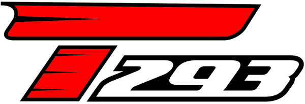
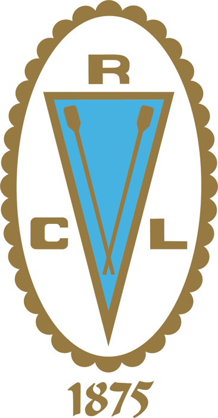
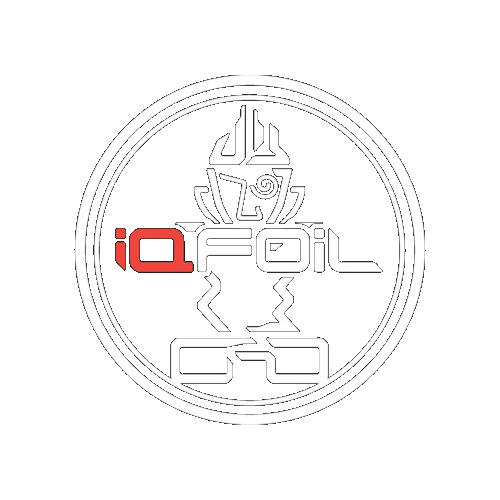

Techno 293
La clase de formación y de los Juegos Olímpicos de la Juventud. Tabla monotipo, velas de 6.8 y 7.8 m². Es donde empieza el equipo después de la academia.

Reglamentos, trámites, calendario y guías del equipo de Windsurf del CRL, resumidos en artículos cortos. Busca una palabra o elige tu perfil; cada artículo enlaza al documento original.

La clase de formación y de los Juegos Olímpicos de la Juventud. Tabla monotipo, velas de 6.8 y 7.8 m². Es donde empieza el equipo después de la academia.

La clase olímpica. Tabla con foil, velas de 7.0 a 8.0 m² y categorías Sub‑15 a Senior. Con ella el equipo compite en Sudamericanos, Mundiales y el circuito olímpico.